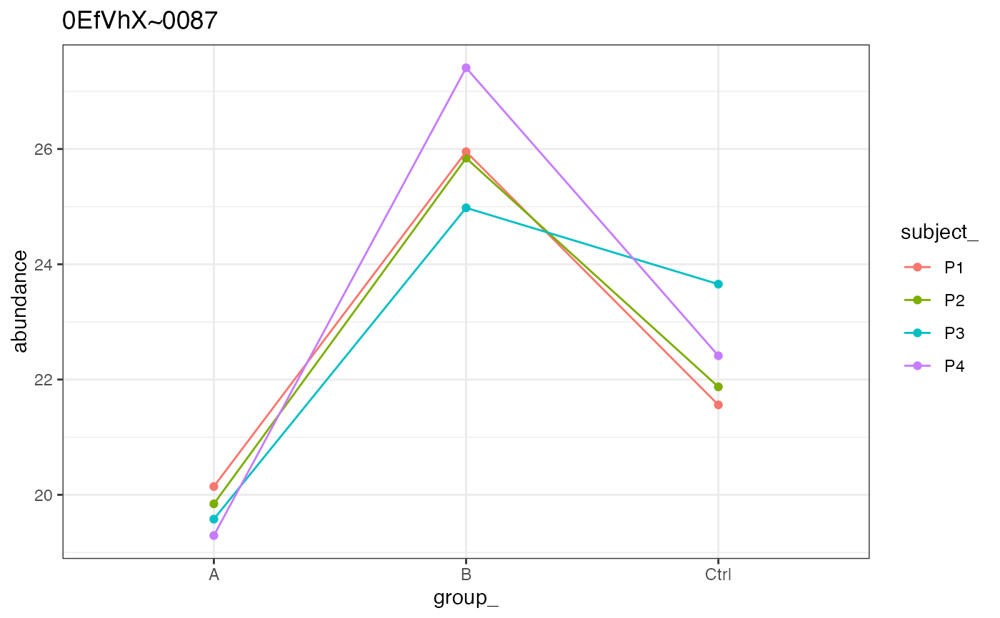
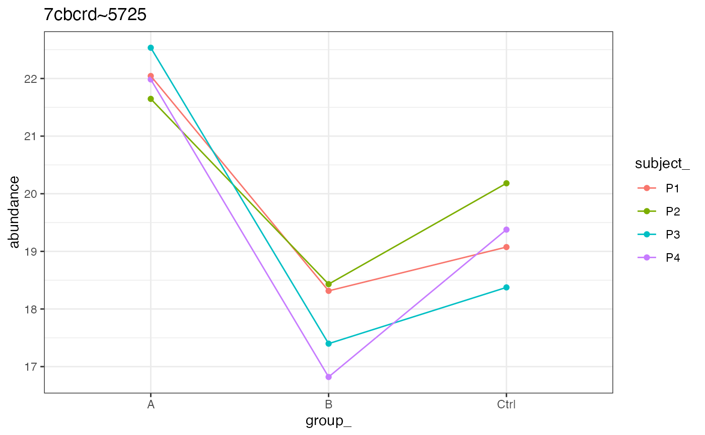
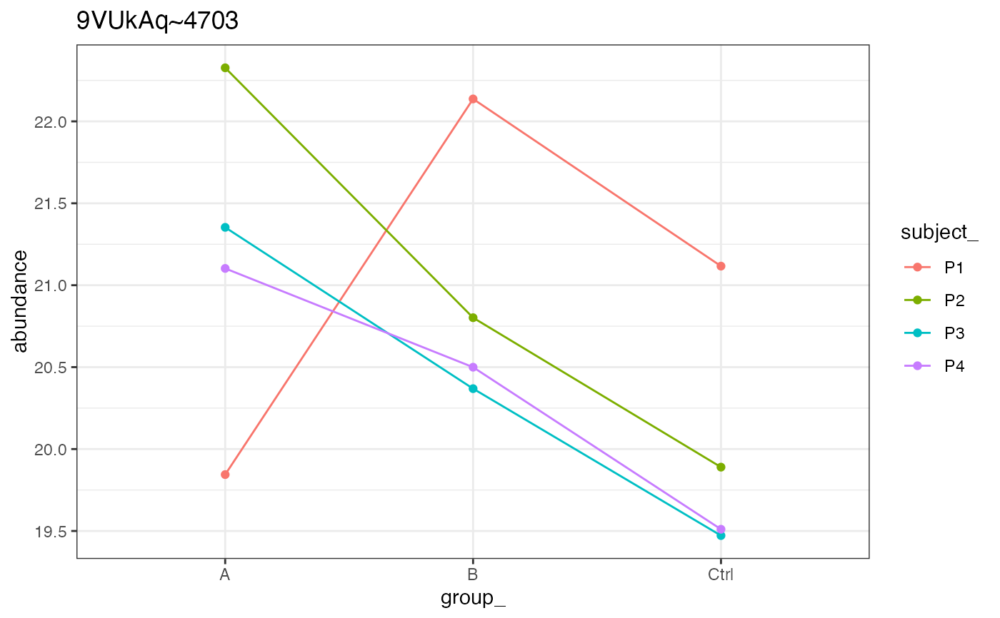
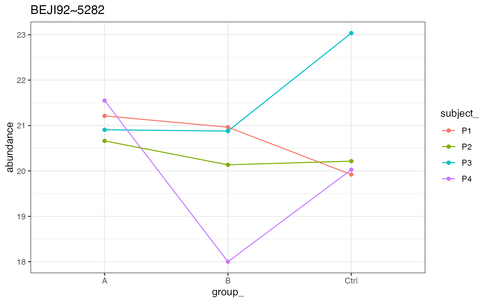

nice plot for paired analysis
Examples
xd <- prolfqua::sim_lfq_data_protein_config(with_missing = FALSE, paired = TRUE)
#> creating sampleName from fileName column
#> completing cases
#> completing cases done
#> setup done
xd <- prolfqua::LFQData$new(xd$data, xd$config)
xa <- prolfquapp::writeLinesPaired(xd)
xa[[1]]

xa[[2]]

xa[[3]]

xa[[4]]
